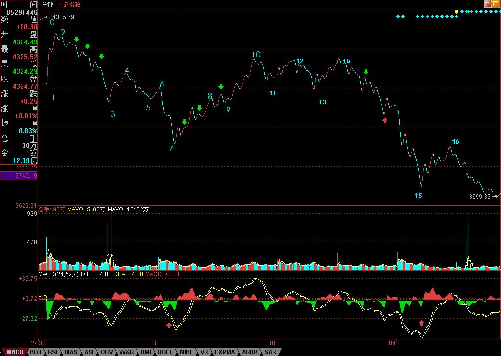
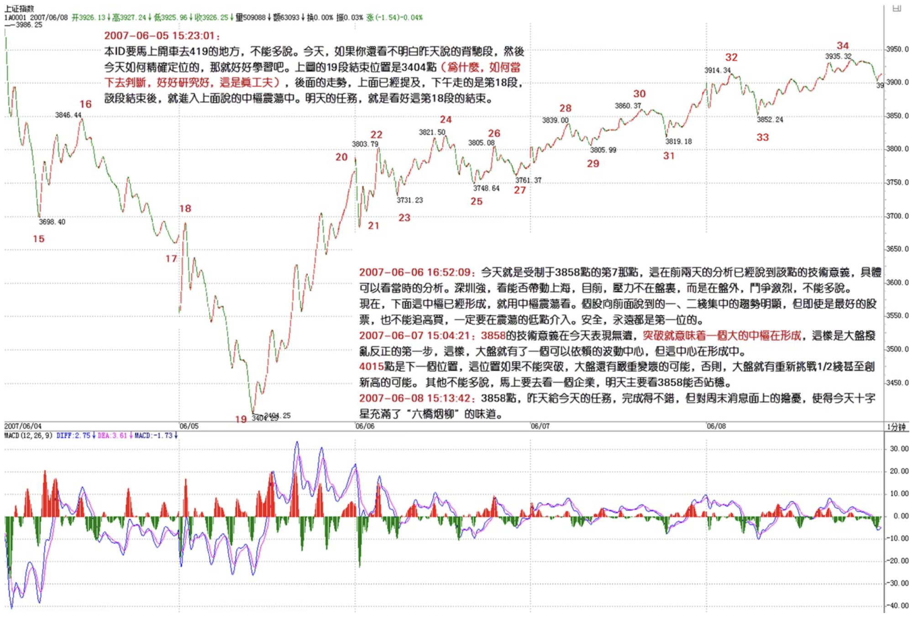

教你炒股票58：图解分析示范三
2007/6/4 22:34:47
明天收盘后要出一次差，去一趟曾419赋诗的地方，所以，先把课程送上，今后几天都没时间写帖子，但每天收盘后的解盘，都会尽量按时附上。至于其他内容的帖子，等出差回来再说了。
大盘大跌，除了清洗筹码，还可以清洗一下人。本ID说过，这里没必要有这么多人，来这里的，如果不是希望成为猎鲸者的，就没必要来了。那种跌个40%就惊慌失措的，也不大适合市场。市场从来都是血腥场所，这点在前面已经反复说到，见不了血腥场面的，还是把钱好好去买国债，这样比较安心。股票就是废纸，该卖的时候不卖，把股票当宝，这就是投资的最大软肋。如果你看图形操作时，做不到无我无股票，只有走势图形，那基本可以不看图了，因为有我有股票，被自己的贪婪恐惧所牵引，你看的图，也不过就是自己的贪婪与恐惧，那何必看图？
说一个最简单的例子，就算你没技术，只按最简单的跌破5日线走，那请看看你该在什么时候走，且不说对于具体的个股了。这次是一个很好的实习机会，请回想一下那些卖点时，你自己究竟在干什么？心里是不是有很多幻想，被幻想蒙蔽了眼睛？看图操作，唯一的对象只有图，谁说都没用，市场是当下发生着的，没有人能替你去反应。
先把市场放一边，继续图解分析，把这次跌势的图形连续分析下去，这样大概对各位的理解与分析有一定的帮助。请看下图：

各位可能还会对如何去确定线段有很大疑惑，图上已经用数字标记了从30日开始的1分钟图上的线段。为什么这样标记？例如14-15间带红绿箭头这一段为什么不是线段？这很简单，因为这段中的下-上-下-上-下中，没有任何的重合，也就是第二个上的终点没有触及第一个上的起点，这种图形，和直接的一个下没有任何区别。而一个线段，除非是缺口，否则必须由至少上-下-上或下-上-下的三折组成，只要互相相邻的上或下不重合，则这个模式可以一直延伸下去而依然还是一个线段。这里就不难明白14-15为什么只是一段线段了。
那么为什么14-15这线段不构成合适的买点，因为在下面的MACD辅助中，可以看出这一段的力度比前面所有的都大（这从黄白线就一目了然了），那当然不构成任何的1分钟以上的背驰，最多就是1分钟以下最小级别的背驰。在15下MACD小红箭头处，比较绿柱子的面积，就可以发现这个小的背驰，因此就有了15-16的反弹，该反弹在14-15最后一个上附近受阻，十分技术。
而站在10-13构成的1分钟中枢来看，15-16这反弹反而是构成一个第三类卖点，本ID看了一下留言，有叫CCTV也看出这个是一个第三类卖点，但他的理由好象是这反弹没突破7这点所以是第三类卖点，这是不对的，因为如果是那一点，那对应的中枢就乱了。注意，第三类买卖点必须是次级别离开，次级别反抽，而且是针对该级别中最近那个中枢，而以前也曾说过，对于一些快速变动的行情，往往第三类买卖点离开的距离会很远。
从16开始的一段，有进入背驰段的可能，但由于明天的行情没有开始，所以如果明天突然加速下跌，就可以破坏这可能，所以具体是否背驰成立，还要看明天走势的内部区间套的当下定位。如果出现背驰，那么一个反弹至少重新回到15这点上，这样就从15这点开始至少形成一个1分钟的中枢了。
而对于1-10这个5分钟中枢，该反弹如果不能重新回到4015之上，那就会形成一个5分钟的第三类卖点。从目前的情况看，这种可能性有很大，所以这也预示着，今后几天，任何在4000点下的反弹，都会构成一个卖点并至少引发一个更大级别的中枢，甚至是新一轮的下跌，除非这反弹能重回4000点之上。显然，从中枢的分析中，可以很绝对地分析出今后一段走势的一些操作性质。
站在更大的层面上，大盘要重新站稳，就要形成一个较大级别的中枢，而从10开始，一个新的5分钟中枢都没形成，如果新的5分钟中枢最终和1-10这个5分钟中枢没有重合，那么就形成一个5分钟级别的下跌，那其后的压力就更大了，所以，那CCTV也蒙对了一点，就是7这点有这极强的技术含义，如果一个5分钟背驰引发的反弹都能重回该点之上，那么大盘的走势就会有好转的可能，否则短线压力依然。
别看本ID理论的分析似乎很复杂，但其中绝对条理清晰，每个结论都是严格，没有任何含糊的。但关键，首先要把图给分解对，否则就乱套了。这点必须多看图，多实践。所以，今后一段课程，都继续把这图分解下去，至少看到一个日线中枢的生成为止，有这样的具体分析，对各位的理解和把握应该有所帮助。
附录：
本ID要马上开车去419的地方，不能多说。今天，如果你还看不明白昨天说的背驰段，然后今天如何精确定位的，那就好好学习吧。上图的19段结束位置是3404点（为什么，如何当下去判断，好好研究好，这是真工夫），后面的走势，上面已经提及，下午走的是第20段，该段结束后，就进入上面说的中枢震荡中。明天的任务，就是看好这第20段的结束。
大走势，就是月线的5均线，今天盘中假突破，而且还是3434点一般的位置，这不难看出来。
对不起，不能多说了，本ID该干的干了，该说的说了，是否能成为你自己的东西，那就不是本ID能决定的。
明天解盘见，帖子就写不了了。
回复
缠中说禅 2007/6/4 22:38:00
明天收盘就要开车走，所以解盘附录上后就不能和各位多聊了。
今后几天，尽量收盘后写解盘，如果有时候要晚上写，也请原谅。
先下，再见。
缠中说禅 2007/6/4 22:45:33
补充一句，图片看不到的，请到本ID相册里找20070604那张放大看。
子时，要休息，下了，再见。
缠中说禅 2007/6/5 15:23:01
本ID要马上开车去419的地方，不能多说。今天，如果你还看不明白昨天说的背驰段，然后今天如何精确定位的，那就好好学习吧。上图的17段结束位置是3404点（为什么，如何当下去判断，好好研究好，这是真工夫），后面的走势，上面已经提及，下午走的是第18段，该段结束后，就进入上面说的中枢震荡中。明天的任务，就是看好这第18段的结束。
大走势，就是月线的5均线，今天盘中假突破，而且还是3434点一般的位置，这不难看出来。
对不起，不能多说了，本ID该干的干了，该说的说了，是否能成为你自己的东西，那就不是本ID能决定的。
明天解盘见，帖子就写不了了。
